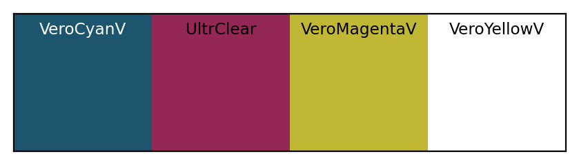
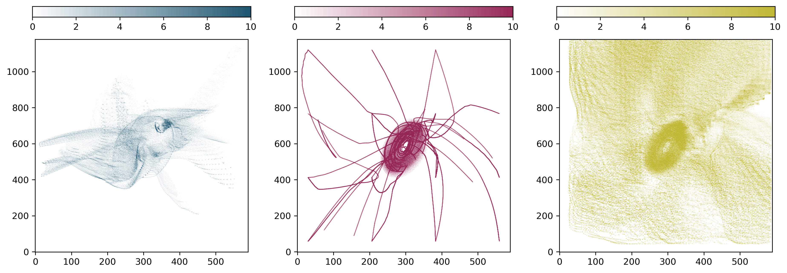
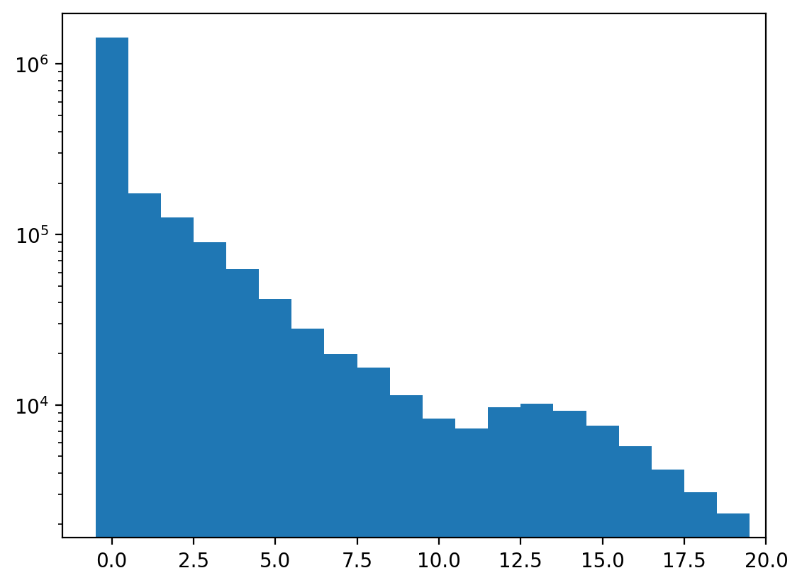
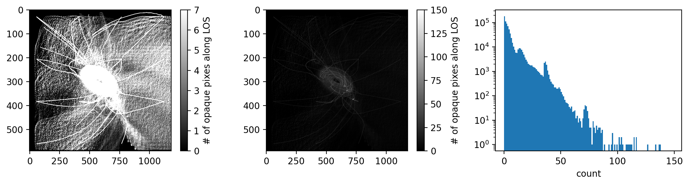
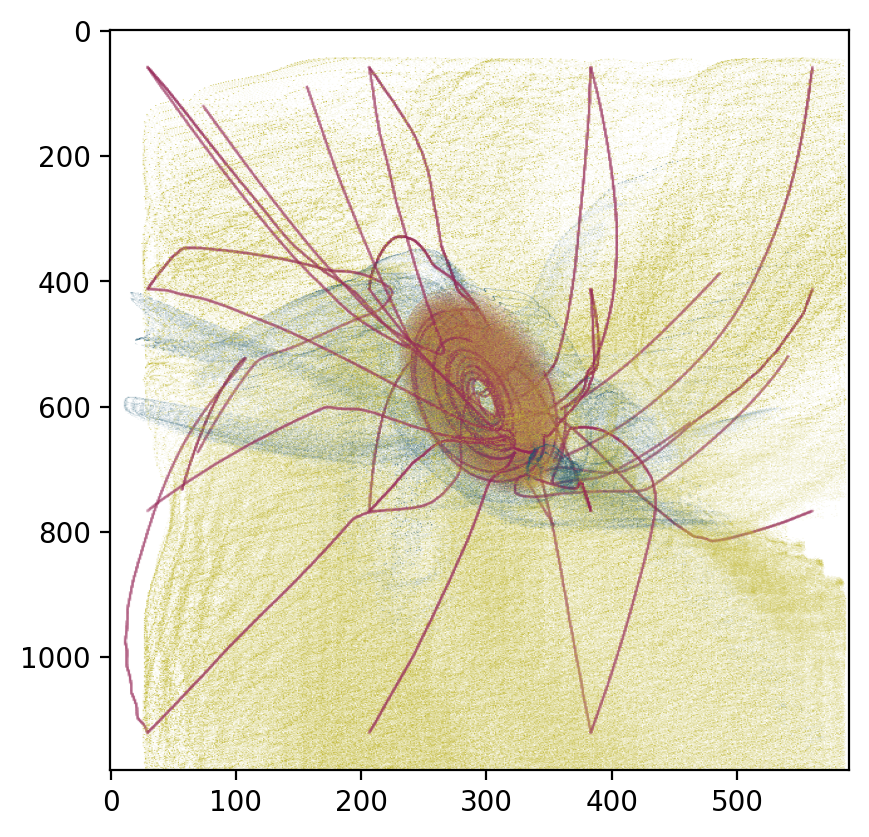
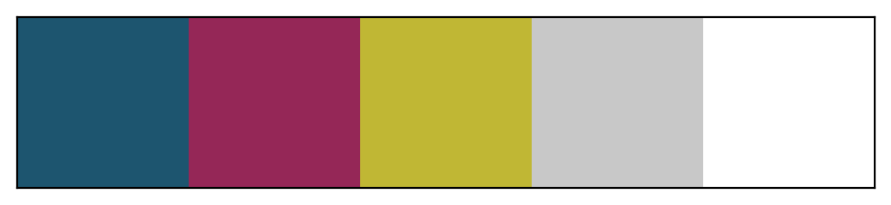

Analyze MHD image stack
[1]:
import astro3d
from astro3d import image_stack
Read the image stack
We again need to set the printer-specific settings and the directory of the slides:
[2]:
stack = image_stack.IStack(
astro3d.get_output('slices_mhd'),
dpi_x=600, dpi_y=300, dz=27e-4,
)
Print out statistics
[3]:
f, ax = stack.show_colors(titles=['VeroCyanV', 'UltrClear', 'VeroMagentaV', 'VeroYellowV', 'PureWhite'], fontsize='small')
f.savefig('material.png', transparent=True, bbox_inches='tight')
getting colors from 10 sample images ... Done!

Now we assign the transparent color index
[4]:
stack.empty_indices = [3]
[5]:
stack.show_info()
There are 4 colors in this image:
- [29, 85, 111]
- [149, 39, 87]
- [192, 183, 52]
- [255, 255, 255] (transp.)
1850 files
dimension = 5.00 x 5.00 x 5.00 cm
filling fraction: 0.25%
nr of fully transparent columns: 0.01%
most opaque pixel has 150 filled pixels (=8.11% of all layers are filled)
mean counts in non-transparent columns: 2.3, 9.9, 4.8, 1.8e+03
Plots
Show the distribution of materials
[6]:
f, ax = stack.show_counts()

Show a histogram of the columns that are not fully transparent
[7]:
f, ax = stack.show_histogram()

Show fully transparent pixels and the density distribution.
[8]:
f, ax = stack.show_transparency_estimate()

Top view
[9]:
stack.show_top_view(bg=[255, 255, 255]);

Add shell
[10]:
from pathlib import Path
path = Path(astro3d.get_output()) / (stack.directory.name + '_shell')
[11]:
stack.add_shell(0.2)
[12]:
stack._get_colors()
getting colors from 10 sample images ... Done!
[13]:
stack.show_colors()
[13]:
(<Figure size 500x100 with 1 Axes>, <Axes:>)

[14]:
stack.empty_indices = [3, 4]
[15]:
# here we don't store all of them, just one for testing
stack.save_images(path, i0=0, i1=1)
directory exists, deleting old files
only printing from index 0 to 1 = 0.00 cm of it